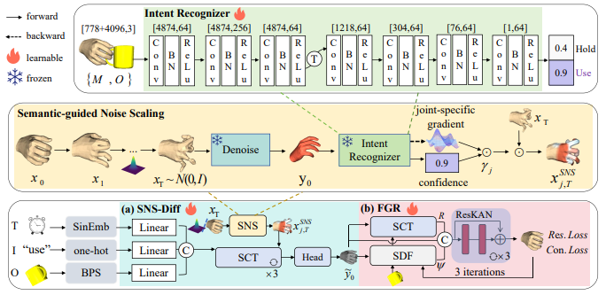
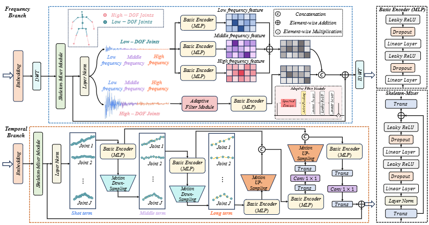
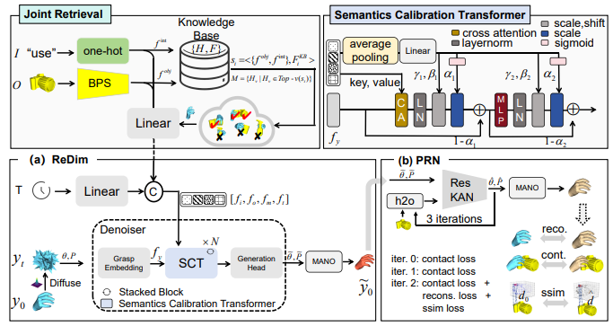
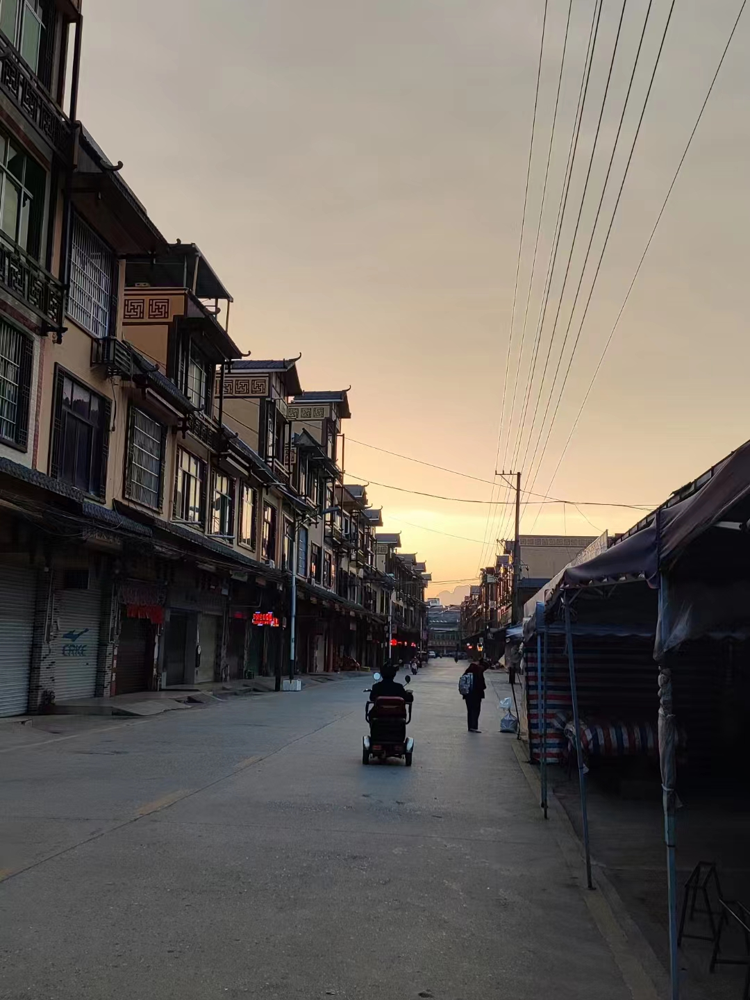
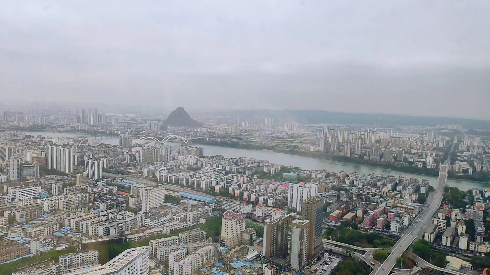

Zhenhua Tang 唐振华
Postdoctoral Fellow · Faculty of Science and Technology, University of Macau
Supervisor: Prof. Chi-Man Pun · University of Macau
📋 Short Bio
Zhenhua Tang is currently a Postdoctoral Fellow at the University of Macau under Prof. Chi-Man Pun. He received his Ph.D. from Hefei University of Technology (supervised by Prof. Richang Hong). His research focuses on computer vision, 3D human pose estimation, motion synthesis, and robotic grasp generation. He has published in AAAI, CVPR, ACM MM, TMM, TCSVT, etc.
Selected Publications
Conference Papers
2026

SNS-Grasp: Semantic-guided Noise Scaling for Grasp Generation

MotionRefineNet: Fine-Grained Pose Sequence Smoothing and Refinement
2025

RAGG: Retrieval-Augmented Grasp Generation Model
2024

JPA: A Joint-Part Attention for Mitigating Overfocusing on 3D Human Pose Estimation

Space-View Decoupled 3D Gaussians for Novel-View Synthesis of Mirror Reflections
2023

RepEPnP: Weakly Supervised 3D Human Pose Estimation with EPnP Algorithm
2019

An Articulated Structure-Aware Network for 3D Human Pose Estimation
Journal Papers
2025

Probabilistic Generative Approach for Ambiguity-Aware Parameter Extraction
2023

MLP-JCG: Multi-Layer Perceptron with Joint-Coordinate Gating for Efficient 3D Human Pose Estimation

FTCM: Frequency-Temporal Collaborative Module for Efficient 3D Human Pose Estimation in Video
2019

3D human pose estimation via human structure-aware fully connected network
2018

Pose-Based Composition Improvement for Portrait Photographs
🤝 Academic Services
- Reviewer · IEEE TIP, TMM, TCSVT, TCSS, ACM TOMM, IJCV, CVPR, AAAI, ECCV, ACM MM, PRCV, ACCV
💼 Employment
- University of Macau · Postdoctoral Fellow (2025–present) Prof. Chi-Man Pun
- JD Explore Academy · Algorithm Engineer Intern (2022–2023)
- HFUT · Research Assistant (2020–2021)
- Shenzhen University · Research Assistant (2020)
- Tencent · Online Practice (2018–2019)
- TP-Link · Production Planner (2015)
🌏 Tang's Travels
“He wants to see the world.”

